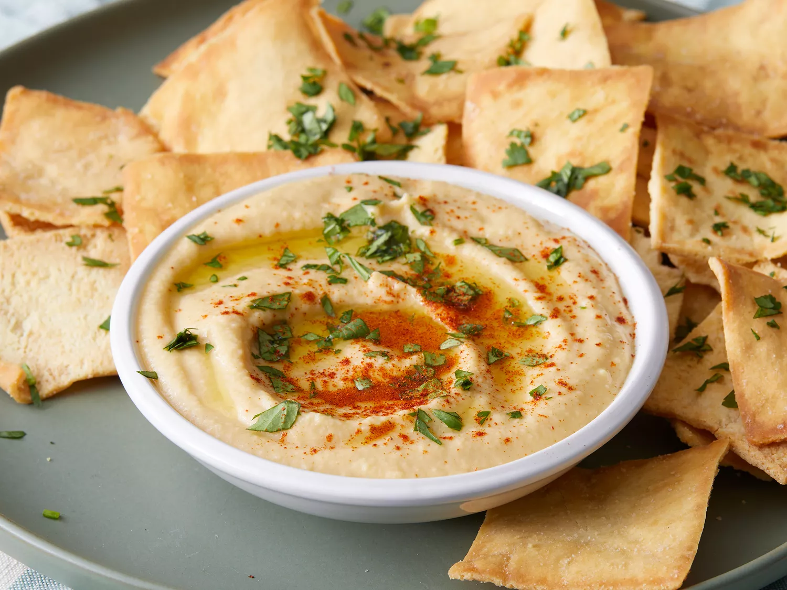

Super Easy Hummus
Description
Learn how to make homemade hummus with this super easy recipe that only takes minutes. Great with veggies or pita chips. Really it's great with anything!
- Prep time: 5 mins
- Servings: 4
Nutrition Facts
- 121 calories
- 5g fat
- 17g carbs
- 4g protein
Ingredients
- 1 (15 ounce) can garbanzo beans, drained, liquid reserved
- 1 tablespoon lemon juice
- 1 tablespoon olive oil
- 1 clove garlic, crushed
- ½ teaspoon ground cumin
- ½ teaspoon salt
- 2 drops sesame oil, or to taste (Optional)
Steps
- Gather all ingredients.
- Blend garbanzo beans, lemon juice, olive oil, garlic, cumin, salt, and sesame oil in a food processor.
- Stream reserved bean liquid into the mixture as it blends until desired consistency is achieved.
- Serve with pita chips or veggies.